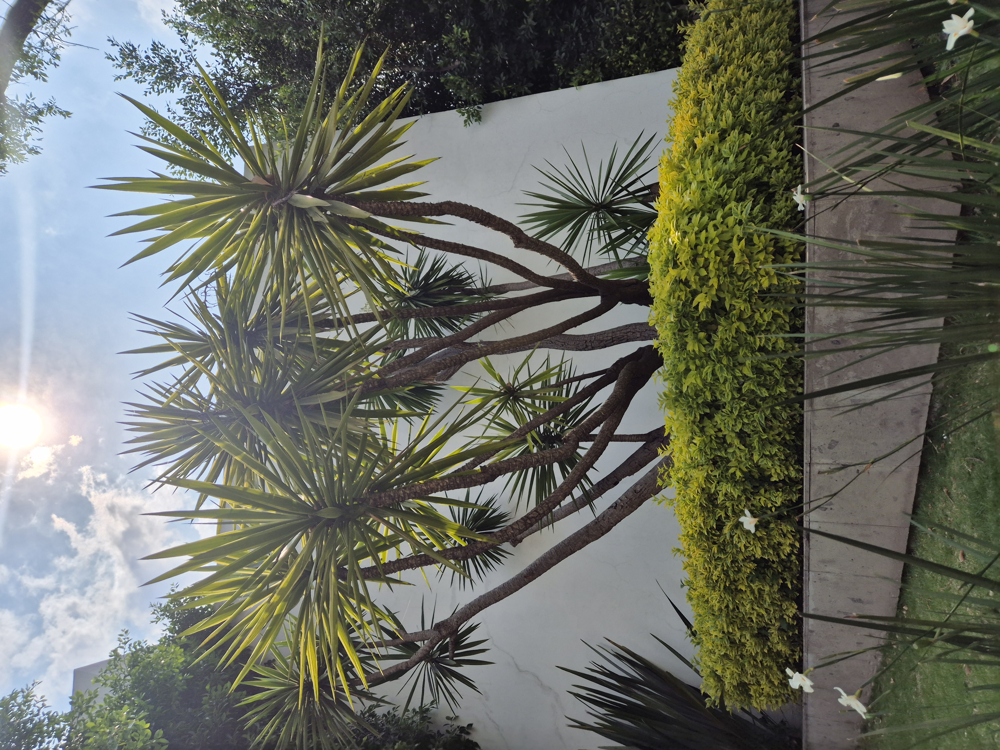
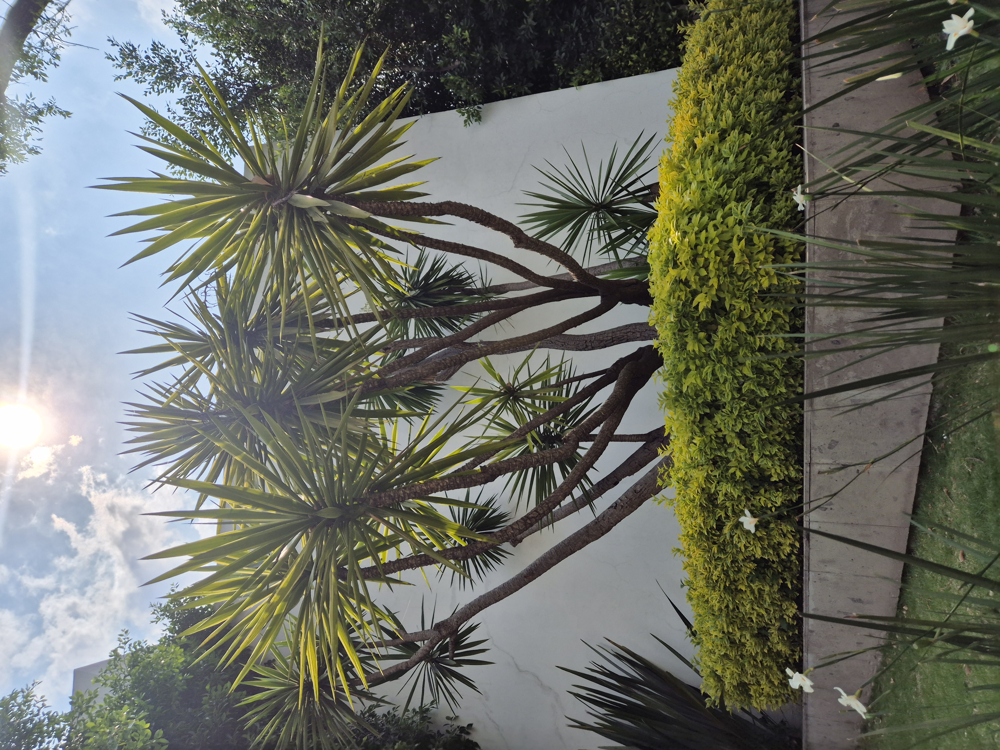

Tengo 32 años y disfruto dedicar mi tiempo a lo que me hace sentir vivo. 🍳 Me encanta cocinar, en especial comida mexicana 🌮🌶️, porque me permite jugar con sabores, colores y tradiciones que me recuerdan a la familia y a momentos felices. También me gusta mantenerme activo: patinar 🛼 me da libertad y me hace sentir como un niño otra vez, y el fútbol ⚽ es la excusa perfecta para divertirme con amigos y liberar energía. Cuando quiero algo más tranquilo, saco mi cámara 📸 y busco plantas raras 🌱✨; me encanta observar los detalles que casi nadie nota y capturar lo especial de lo cotidiano. Y si se trata de comer, soy fan absoluto de la comida callejera 🍔🌯, la considero “gourmet de banqueta”, porque siempre descubro algo nuevo y auténtico en esos puestos llenos de vida y sabor.
La música 🎶 también es parte importante de mi día a día; está conmigo sin importar si estoy alegre, nostálgico o simplemente relajado en casa. Para mí, escuchar una canción es como ponerle ritmo a cada momento. Me gusta disfrutar de las cosas sencillas: caminar por un parque 🌳, recorrer la ciudad 🚶♂️ o descansar escuchando un buen playlist 🎧. Son esos pequeños espacios los que me dan paz y me ayudan a conectar conmigo mismo. Creo que la vida se disfruta más cuando valoramos lo que parece simple, porque ahí está lo que realmente nos hace sentir bien. ✨